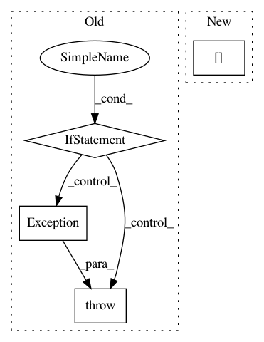

5cfa1934e4a2157d07ef534e1033a3f0e5bc1082,python/ray/experimental/client/server/server.py,RayletServicer,_schedule_function,#RayletServicer#Any#Any#Any#,203
Before Change
context=None,
prepared_args=None) -> ray_client_pb2.ClientTaskTicket:
payload_ref = cloudpickle.loads(task.payload_id)
if payload_ref.binary() not in self.function_refs:
funcref = self.object_refs[payload_ref.binary()]
func = ray.get(funcref)
if not inspect.isfunction(func):
raise Exception("Attempting to schedule function that "
"isn"t a function.")
self.function_refs[payload_ref.binary()] = ray.remote(func)
remote_func = self.function_refs[payload_ref.binary()]
arglist = _convert_args(task.args, prepared_args)
// Prepare call if we"re in a test
with stash_api_for_tests(self._test_mode):
After Change
output = remote_func.remote(*arglist)
if output.binary() in self.object_refs[task.client_id]:
raise Exception("already found it")
self.object_refs[task.client_id][output.binary()] = output
return ray_client_pb2.ClientTaskTicket(return_id=output.binary())
def _convert_args(self, arg_list, prepared_args=None):
In pattern: SUPERPATTERN
Frequency: 3
Non-data size: 4
Instances
Project Name: ray-project/ray
Commit Name: 5cfa1934e4a2157d07ef534e1033a3f0e5bc1082
Time: 2020-12-18
Author: me@barakmich.com
File Name: python/ray/experimental/client/server/server.py
Class Name: RayletServicer
Method Name: _schedule_function
Project Name: ray-project/ray
Commit Name: 1d532d1cb8b829bdf7055a22c206032ca0b72e46
Time: 2020-04-02
Author: rkooo567@gmail.com
File Name: python/ray/tests/test_webui.py
Class Name:
Method Name: test_get_webui
Project Name: keras-team/keras
Commit Name: 9d15c9611570bd3ecab52ed924c69a60ac3b2784
Time: 2016-01-03
Author: julien@fhtagn.net
File Name: keras/layers/convolutional.py
Class Name: UpSampling2D
Method Name: get_output